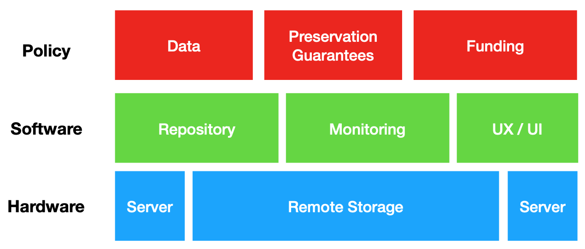
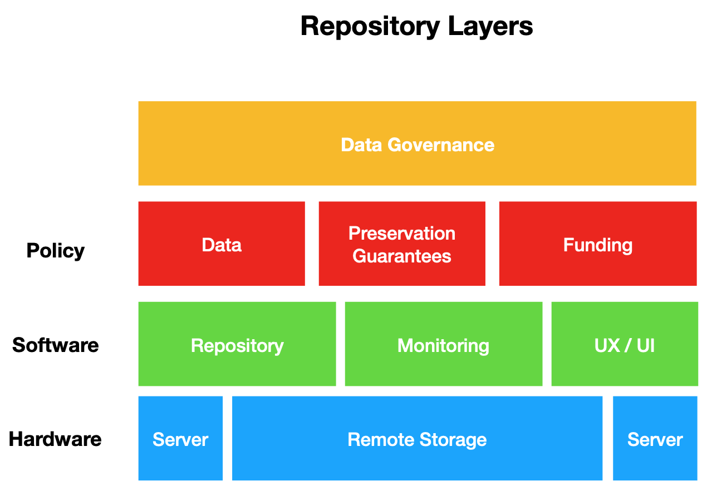

3 Data Stewarship Applications
In this chapter we will discuss applications of concepts to data stewardship. This will include some further elaboration of concepts covered in previous sections (e.g. data cleaning), but will focus on practical ways to implement these concepts at DOL. The goal of this chapter is to understand how to apply and use existing best practices in data stewardship and where possible resources for further learning. The topics we will cover include:
- Data Quality
- Data Cleaning
- AI and Machine Learning
- Data Visualization
- Databases
3.1 Data & Metadata Quality
3.1.1 Data Quality
In the Fundamentals of Data Stewardship section we defined data quality through the International Standards Organization (ISO) 8000 as “…the degree to which a set of characteristics of data fulfills stated requirements.” An ISO standard is developed by experts in consultation with various stakeholders to agree upon a broad definition that can be applied in any setting. ISO standards can be a great starting point for understanding a broad definition or authoritative way to describe a concept like data quality. But, actually carrying out and enforcing data quality is quite different than simply saying what quality is or should be.
One of the practical ways of thinking about data quality is to distinguish quality that is either internal to the data’s content (e.g. what the data are meant to represent) and its external attributes (e.g. the type of data structure or format that is appropriate for the content).
In data stewardship it is often necessary to evaluate or assess data based on external and internal (content) criteria or what some institutions call indicators. These indicators generally include:
Content (internal)
- Validity - Data should clearly and adequately represent the intended result.
- Reliability - Data should accurately represent what it purports.
- Timeliness - Data should be recorded at frequency, and with regularity to be reliable
- Precision - Data should be free of errors and
Type (external)
- Integrity - Data should be verified for being accurate, and should have safeguards in place to control data editing so that accuracy can be guaranteed over time
- Documentation - Information about how data were collected, analyzed, and the context of appropriate use should be accessible alongside data itself
- Format - Data should be stored in a format that is regularly checked for preservation
Judging data quality within a particular institution is often a matter of adjusting or refining these indicators. For example,the United States Agency for International Development (USAID) has developed a checklist for conducting data quality assessments. Each time a data steward recommends a data source for use a data quality assessment is conducted to guarantee that the data are “fit for purpose” - that is, the recommended data meet the strict quality standards that are expected of USAID research and policy making.
A few examples of the USAID approach to data quality:
As a data steward, understanding and even recommending data quality indicators will be largely dependent upon the rules and regulations of a data governance program. Thus, a good place to start might be finding out where or even if data quality is defined by your organization, and where, if possible there are examples of how master data have been transformed to meet these standards.
3.1.2 Metadata Quality
Metadata quality is, as it sounds, extremely similar in spirit to data quality, but includes some refined indicators that can be useful to documentation that provides a description, rules of access, or rights for data use. There is no ISO or even broadly agreed upon definition of metadata quality (in part because many organizations think of metadata as a sub-class of data). However, there are some broadly agreed upon indicators that can be helpful in evaluating the quality of structured and unstructured documentation that plays the role of metadata. These include:
- Completeness: All necessary descriptive, technical or administrative attributes are included in a metadata record.
- Accuracy: Information is correct both semantically and syntactically. Meaning that the proper standards for representing information are identified and used (e.g. for representing a ‘Date’ the ISO standard 8601 is followed, such as
DD-MM-YYYYor01-01-2000to representJanuary 01, 2000.) - Accessibility: Metadata can be accessed and read by both humans and machines. This is a critical indicator for many business applications because metadata will often play multiple roles - machine-readable metadata will drive data discovery systems, and human-readable metadata will be used to evaluate and judge relevancy. Both of these forms of metadata govern who can and should access data.
- Conformance to expectations: Values (that is what the attribute of a metadata record describes) adhere to the expectations of your defined user communities (both internal and external). A good example of this is an attribute like “location” - for some metadata records location might be a plain language description like “Whatcom County” while other records require a more specific locale like the latitude and longitude of the county (e.g. 48.8787° N, 121.9719° W).
- Consistency: Semantic and structural values and attributes are represented in a consistent manner across records. Values remain consistent within a record or type of records, and attributes are defined clearly with an existing schema. As we talked about in previous chapters, having a schema that can be clearly identified and interpreted is the key to metadata consistency across an organization.
- Timeliness: When the resource changes, the metadata is updated accordingly. When additional metadata becomes available or when metadata standards change, the metadata associated with the resource is also consistently updated.
- Provenance: Information about the source of the metadata or data are recorded and captured in the record, and metadata transformations or changes can be traced back to the original record. Like data quality, metadata quality has a number of specific institutional applications to ensure that this documentation meet the expectations of data customers.
Like data quality, metadata quality has a number of specific institutional applications to ensure that this documentation meet the expectations of data customers.
Resources
- A very helpful framework for assessing data quality has been developed by the Digital Library Foundation
- Another very helpful model is the CURATE steps from the Data Curation Network - these include Checking, Understanding, Requestin, Augmenting, Transforming, and Evaluating metadata records. A helpful guide to carrying out these steps
3.1.3 Data and Metadata Quality in Practice
Applying quality standards can happen informally and formally. Informally, the criteria described above can be used heuristically to guide the creation or editing of data to ensure that it meets a customer’s expectations. It is my experience in data curation that informal quality assessments are part of daily work in identifying data for customers, and helping stakeholders to assess whether or not data are being collected with the right level of sophistication or accuracy. Often times this informal process of metadata quality assessment will reveal shortcomings or inaccuracies in quality that should be fixed by a data owner. The repair of or improvement of this data then is a matter of contacting the owner and helping them understand where there is a gap between best and current practices.
More formally, data quality assessments can be conducted as part of an inventory process that attempts to systematically evaluate the readiness of data to meet customer needs. A data inventory, like all of data stewardship, can vary based on the needs of an organization and is oftentimes a necessary exercise in establishing data governance.
The general steps to performing a data inventory (or sometimes called an audit) are:
- Establishing an Oversight committee
- Determining the scope and plan of the inventory
- Choosing which indicators of data or metadata quality will be assessed (and often refining the indicator definitions to meet a particular assessment need)
- Cataloging data assets in accordance with the inventory plan and identified data quality indicators
- Documenting the inventory for a data governance committee which can then prioritize or guide next steps in improving data quality.
Recommended Resources for Developing and Executing a Data Inventory:
GovEx - a non-profit that works with government agencies at the state and municipal level - has established an excellent guide to designing and executing data inventories. This guide includes numerous examples of checklists and data quality indicators used by agencies throughout the USA
The US Department of Transportation has developed a sophisticated model for executing data inventories and has provided an easy to read and accessible overview of this process
Data inventories are a part of good data governance, but they are also increasingly a component of data privacy legislation. For example the General Data Protection Regulation (GRPR) established by the EU includes an article (30) that requires any entity collecting personally identifiable information (PII) to conduct an inventory of data security and quality.
Similarly, the state of Washington has flirted with the idea of enacting data privacy legislation that is similar to the California Privacy Rights Act (CPRA). Understanding the requirements of a data inventory in these legislative contexts can often lead to more useful and meaningful data quality indicators.
3.2 Data & Metadata Cleaning
3.2.1 Data Cleaning
3.2.2 Metadata Cleaning
As we discussed above, Tidy Data establishes some general principles that should apply to the structure and representation of data in a table. These principles should be applicable across all kinds of tables that have variables, values, and various kinds of observations. The most simple formulation of tidy data is:
- Each variable is a column
- Each observation is a row
- Each type of observational unit is a table
Metadata should have some similar principles. That is, there should be some general rules that we can follow to develop to describe attributes, values, and their corresponding relationship to instances of a class. Here are the principles I will put for tidy metadata as it applies to tables of data.
The properties of a dataset are expressed as an attribute-value pair that conforms to a schema:
- Attributes are declared by a namespace
- Values are, where possible, constrained by a controlled vocabulary.1
- Schemas are published to the web.
Lets unpack each of these statements so that it makes sense in the context of data stewardship.
“Schemas are published to the web” : a metadata schema establishes and defines data elements (attributes) and the rules governing the use of data elements to describe a resource (Zhang and Gouley, 2009). Schemas are, in plain language, the rules of engagement for creating metadata. That is, they govern what are the valid and invalid use of an attribute-value pair to describe a dataset. Schemas then have to be public in order to be validated. Publishing a schema to the web means that the schema must be at a resolvable web address (a url) and should be encoded in a machine-readable language (e.g. XML or JSON). Schemas should, where possible, use definitions of of elements (attributes) as a unique namespace.
“Attributes are declared by a namespace” : In publishing a schema to the web, we should also take care to define the use of an attribute such that each attribute has a unique location where the definition and explanation of its use is publicly accessible and identifiable in a schema. The attribute namespace has subtle, but important relationship to a schema. A schema can be made up multiple namespaces, each namespace can be a part of a different schema (I’ll offer an example below so that this is less abstract).
“Values are, where possible, constrained by a controlled vocabulary” : Recall that in our chapter on Tidy Data, we discussed the appeal to authority control for standard units of measurement. In metadata we want to rely upon this authority control in a similar way - this helps to standardize what types of values an attribute can have, and provide clear guidance for how these values should be constrained.
3.3 Data Repositories
A data repository is both a digital archive for storing and preserving data, as well as the practical infrastructure that carries out the policies, and governance for data management.
- Software and Hardware for ingesting, curating, and preserving data.
- Management Policies: Establish mission, goals, levels of preservation, types of data accepted, cost of deposit, etc.
- Governance: How the repository will be managed, by whom, and through what budgets, and with what level of security.
The last 20 years have seen data increasingly published to the web as structured information free for sharing and reuse. We have, thus far, discussed multiple innovations that have made this increase in data collection and publishing possible, including how data are practically stored, retrieved, and packaged for reuse. Early efforts at increasing data access focused specifically on how to embed data in electronic publishing environments (Abiteboul et al, 2000) and how to provide programmatic access to data that were stored on remote servers (Richardson et al, 2013). Over the last decade technologies have been developed to better connect different components of the data publication lifecycle - starting from a small number of hard to use proprietary repositories to a diverse range of (slightly easier to use) open-source options. These repositories depend on an “architecture” - that is a complex and highly coordinated integration of software, hardware, and human services.
3.3.1 Layers of a Data Repository
Data repositories are simply a series of technical “layers” or a “stack” of technologies - each layer consists of a set of services and interfaces that allow data to be reliably preserved and published for reuse. The layers of a repository are decribed, incrimentally, below.
Hardware: The hardware layer of a repository consists of technologies that practically store, and serve data to a software layer. The hardware layer of a repository practically, at minimum, consists of a set of servers (hosting databases, websites, etc) and a set of backup storage environments such as spinning disks or tape-based storage. The hardware layer is closest to what we described in the Introduction chapter as the “Physical” layer of a computing system (hence the “hard” in hardware).

Software: The software layer of a repository consists of code that practically runs a web-interface, and provides APIs that connect different servers to one another so that data can be reliably retrieved, and served to end-users. The software layer presents a graphic user interface to “customers” of the data repository and allows for ease of access. This software layer also provides a graphic user interface for curators who manage deposits to a data repository, and allows for metadata and other descriptive elements to be attached to data before it is ingested into a long-term storage environment. Often the software layer of a repository is described as a “repository framework” (e.g. Dataverse, CKAN, or DSpace) - this simply means the different software components that are particularly configured for data access and preservation (more on this below). The software and hardware layer practically carry out preservation and long-term storage of data.

Policy: The policy layer of a repository consists of curation services such as deposit, ingest, metadata creation, and publication of data to the web. The policy layer provides specific rules for how these services are to be carried out, and specifies who is in charge of what practical functions of data publication and preservation.
 Governance: The governance layer of a repository consists of institutional guidelines that specify how data should be managed over the long term, the rights of data producers and consumers, and the intellectual property claims that can be made by any institutional actor (as we discussed in chapter 1)
Putting these layers together we can begin to understand how a generic term like “repository” or “data portal” is actually a much more complex sociotechnical arrangement of software, hardware, policy, and governance. Each of these layers necessarily supports the others, and are necessary for a well-functioning and sustainable digital storage environment where data can be discovered, accessed, and contributed. In thinking about the different repositories that will be accessible to and used in a data stewardship role, this simply layered model can help unpack the people, the rules, and the resources that make up any one data repository.
3.4 Artificial Intelligence
Artificial Intelligence, or AI, is a field of computer science that uses formal logic to develop models that mimic human reasoning (hence, the term ‘artificial’ intelligence). AI is almost always aimed at tasks related to prediction, classification, or regression (i.e. estimating the relationships between a dependent variable and one or more independent variables). AI’s most basic goal in mimicking human reasoning is to automate tasks by turning data (examples) into models (recipes). In this sense, artificial intelligence models are algorithms - that is, models are algorithmic recipes that automate some task by using data to make a prediction, regression, or classification.
In the past AI has struggled to make much progress on task automation for two reasons:
- insufficient data to train a model, and
- insufficient computational power to run a model that can realistically mimic human reasoning.
Increasingly AI researchers have access to large amounts of well-structured data that can be used to train a model to classify or predict certain outcomes (e.g. The web contains lots of images of cats and dogs - and this data can be used to build a classifier to determine whether an image contains a dog or a cat). And, as the cost of high performance computing has come down there is also the opportunity to run models over very large datasets that can accurately make classifications or predictions.
AI is increasingly described as anything that includes data and a prediction or decision-making algorithm. While there is great potential for AI applications in automating repetitive tasks there is a long way to go before these applications can realistically mimic human decision making or complex decision making. For example, if a person is walking a bike along the road an AI powering a driverless vehicle has a hard time determining whether or not this is a bicycle or a person - and this confusion can delay the decision making process that tells the car that it should swerve in order to miss the object (whether or not it is a person or a vehicle). This example resulted in the first known death at the hands of AI
3.4.1 Machine Learning
Machine learning is a field of AI that contains all of the elements described above: data, tasks, and models. What machine learning attempts to do is optimize the automation of a task based on input data that is purposefully curated. To understand this process its helpful to first understand the broad difference between supervised vs unsupervised machine learning. In the broadest sense, these two forms of machine learning place emphasis on different aspects of an AI - supervised learning is teaching a machine to make decisions by example ( the emphasis is on data) and unsupervised learning is teaching a machine to make decisions by developing a sophisticated pattern making model (the emphasis on an algorithm).
Supervised machine learning uses pre-labeled data that humans purposefully collect and categorize in order to train a model to perform a specific task. In some sense we can think of supervised learning as the flash card model of learning - By showing a machine thousands of examples of an image that is labeled as either a cat or a dog the machine can learn intricate features that distinguish cats from dogs. With enough examples (data) the machine can then look at a new image and make an accurate classification, that is whether the features of the image resemble what the machine “knows” about a cat or a dog.
Unsupervised machine learning also uses data, but instead of having thousands of diverse examples of labeled data a researcher will optimize a machine learning algorithm to learn patterns. Drawing on the example above about cats and dogs, an unsupervised machine learning application could be shown 100 example images of cats, dogs, monkeys, horses, and elephants. The machine would then learn features that distinguish these animals from one another, but in a shallow way. For example, if an image of a cat lacks pointy ears then the unsupervised machine learning application will likely mislabel the image as a dog. But, what the unsupervised machine learning approach lacks in accuracy it makes up for in diversity. Unsupervised machine learning can build complex patterns between data. This makes the unsupervised approach to machine learning very useful when labeled data isn’t easy or economical to use.
AI, and by extension machine learning, are complex topics of data analysis, but understanding generally how these techniques work is valuable to data stewardship in the following ways:
Increasingly, vendors advertise or attempt to sell AI applications that are heavily dependent upon models. These models are, as described above, only as useful as the quality of the labeled data that is used for training. Understanding how well a model can be used by an organization is therefore dependent upon how much work it will take to clean or prepare labeled data.
Machine learning is often described as a way to automate repetitive tasks in data analysis or even data cleaning. And, while machine learning can perform exceptionally well at these tasks its important to recognize which kind of machine learning approach will be taken, and what data are required to successfully train a machine learning model. This can help a data steward identify and recommend data that is useful to model development, or even identify opportunities for restructuring existing data to meet machine learning needs.
Further Reading
3.5 Data Visualization
Just as good writing depends on colorful examples, tone, correct grammar, and a logical progression of ideas so too does data analysis. Often data analysis results in not just a neat tidy number, but a set of results that need to be both explained in text and visually communicated through graphs, charts, or plots. The value of data visualization (plots, charts, and graphs) is not just to show off the results of an analysis through pretty pictures, but to economically communicate about data using a set of principles.
This brief introduction to principles of data visualization is meant to guide future work, but it is by no means comprehensive. At the end of this section I provide a number of resources for further consultation. We will cover four principles in total: Selecting variables to visualize data; determining the scale and relationship of variables for visualization; and, mapping these variables to a visualization style or “aesthetic.”
3.5.1 Principles of Data Visualization
- Select Variables - Data that are easy to visualize often contain a variable, an observation, and value. Each of these components of our data inform what is the best method of data visualization. Most frequently we want to depict a relationship between two or more variables in a set of data by showing how values change between observations. For example, if we want to communicate with a policymaker about the rate of traffic fatalities over time then we would identify a variable like traffic accidents in young drivers and select some observations that occur during a bounded period of time (e.g. 2005-2016). By showing how the values for these observations change we can demonstrate that there is a rise in traffic accidents, a decline, or maybe there is no steady trend at all. The point is that we identify in our data what relationship we want to depict, and then determine what variables can be used to demonstrate a relationship. Most often an independent variable (that is a variable that will occur regardless of any external event) is placed on the X axis and a dependent variable is placed on the Y axis. In the example above the independent variable is time and the dependent variable is traffic accidents. The relationship would then be depicted as follows:

- Determine Scale of Values - Data can be differentiated by many types and roles (as we’ve discussed throughout the curriculum). For data visualization often the first decision to make is whether the values of an observation are discrete or continuous.
- Discrete values are whole or complete numbers that represent some real world phenomenon without an intermediary. In the example above, fatal crashes (the dependent variable) is a discrete value.There can’t be a partial fatality (either a driver died as the result of an accident or they did not).
- Continuous values are numbers that can be partial, or divisible by some intermediary. In the example above the X axis depicts time by year. But, time is a continuous value - we could choose to represent time by hours, days, months, or years.
Data may also contain categories or classifications that are neither discrete nor continuous. For example, if we were visualizing data related to traffic accidents we might have categories such as:
- Head-on Collisions
- Highway Construction Accidents
- Intersection Accidents
- Interstate Accidents
- Rear-End Accidents
- Side-Impact Accidents
These are distinctions in the type of accident - they don’t have discrete or continuous values that can be easily visualized. Thus, it may be useful to use the categorical values together with discrete and continuous variable data values (e.g. image below)

- Determine Type of Variable Relationship - If data visualization, at its core, is about clearly communicating relationships between variables in our data then it is worth knowing the types of common relationships that might occur, and what types of visualizations are best for communicating with each type. The three most common types of variable relationships that will be visualized are:
- Amount -
- Distribution -
- Proportion -
There are a number of other relationship types that fall into and between these visualizations, including:
- Correlation - how one variable relates to another (such as the number of times an accident occurs because of distraction)
- Ranking
- Time Series
- Deviation
- Distribution
- Proportion / Part-Whole Relationship
- Map elements to Aesthetics - Finally, the graphical elements we choose to construct a visualization can feel overwhelming, but often they break down into three categories of visual aesthetics:
- Position - All data visualizations are rendered in some form of spatial analysis - data for example can be visualized in two dimension position (with an X and Y axis), or data could have a more complex coordinate system that makes use of multiple dimensions (such as latitude, longitude, and depth on a map). Regardless of what dimensions are being depicted all visualizations must have a fixed position.
- Shape Size and Color - all visualizations make use of shape, size, and color to communicate differences between variables, observations, and values. Data points can take different shapes (circles, triangles or squares) that communicate a different variable, or size (small, medium, or large) that communicate some effect size. Most often though, data visualization makes use of color (such as blue vs red) to depict differences in variables or observations that are being depicted.These three simple elements (shape, size, and color) are the essential building blocks of all visual grammars that allow for communicating differences between a variable, an observation, or a value being depicted.
- Lines (or trends) - Visualizations often make use of lines to demonstrate a trend or a pattern (in our example above a downward trend was communicated with a sloping solid black line). Lines can be emphasized by their thickness, and lines can be differentiated by their type (e.g. solid, dashed, pointed lines). Often it is helpful to reduce the number of trend or shape lines in order to effectively communicate.
Resources for Data Visualization
3.6 Summary
This chapter has introduced and refined some major applications of data stewardship, including data and metadata quality, data cleaning, and the relationship between software, hardware, and digital objects (data). We also reviewed the emerging uses of labeled data in AI applications, focusing specifically on machine learning techniques. Finally, we discussed some aspects of data visualization that can be used to determine, or help customers determine, what type of data is appropriate for which types of visualization styles. Data stewardship application are where we begin to translate some of the foundational concepts covered in earlier chapters into actual practice. These practices will be highly contextual, and most of the “best practices” described will take time to learn and apply correctly in a specific organizational setting like the Department of Licensing. In this sense, the value of the chapter can be as a reference guide to existing resources that can be helpful, for example with data quality, in choosing a specific set of indicators and then putting those indicators into practice at DOL.